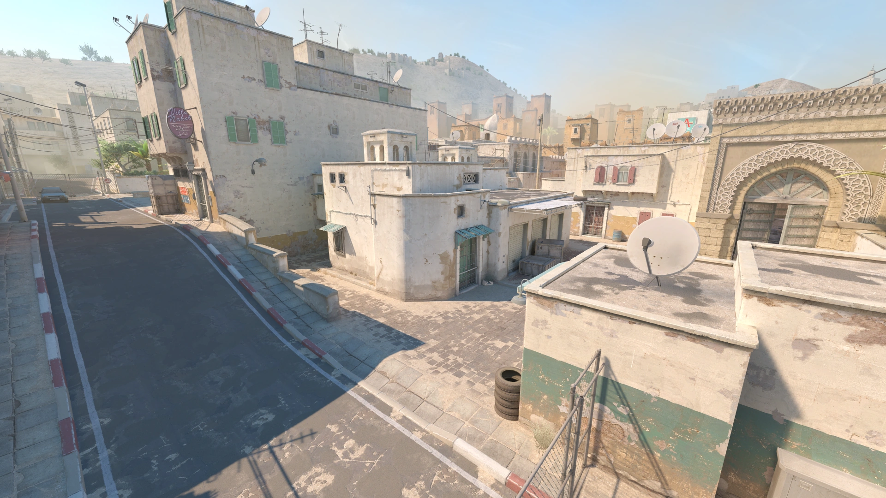

主页
游戏对比
地图讲解
精彩瞬间
激情讨论
关于我们

❮
❯
地图详解
Counter-Strike 2
无畏契约
Dust II
炙热沙城II
Mirage
荒漠迷城
Inferno
炼狱小镇
Nuke
核子危机
Overpass
死亡游乐园
Vertigo
殒命大厦
Train
列车停放站
Ancient
远古遗迹
Bind
源工重镇
Haven
隐世修所
Split
霓虹町
Ascent
亚海悬城
Icebox
森寒冬港
Breeze
微风岛屿
Fracture
裂变峡谷
Pearl
深海明珠
Lotus
莲华古城
Sunset
日落之城
Abyss
幽邃地窖